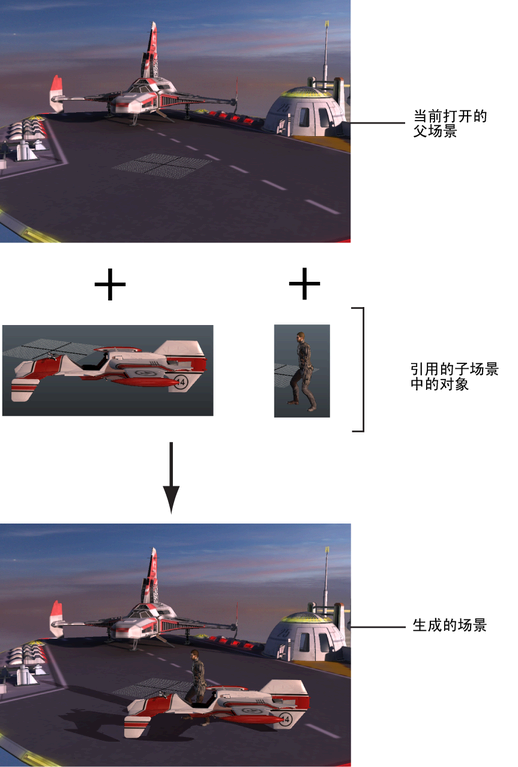

集合多个对象，如建模多边形、着色材质和动画角色，而无需将文件或对象导入场景。所引用文件的内容会显示在场景中，但这些对象的数据是从仍然独立、未打开的已存在文件读取或引用的。
在有多个用户需要同时工作并在复杂场景中共享各种场景资产的协作生产情景下，文件引用使您能够使用 Maya 对象和场景。
一个引用其他文件的场景文件称为父场景，以指示其在文件引用层次中的位置。父场景读取或引用的其他文件称为子场景。即使被引用的子场景显示在父场景中，子场景数据仍然始终独立于父场景。

在父场景中引用子场景时，将为每个子场景创建一个引用节点。“大纲视图”(Outliner)中显示了带有  图标的引用节点和带有 图标的引用对象。引用节点维护父场景和子场景之间的链接，以便保存并重新打开父场景时，引用对象仍保留在父场景中。如果在父场景中修改引用对象，则引用节点会存储这些编辑。请参见引用编辑。
图标的引用节点和带有 图标的引用对象。引用节点维护父场景和子场景之间的链接，以便保存并重新打开父场景时，引用对象仍保留在父场景中。如果在父场景中修改引用对象，则引用节点会存储这些编辑。请参见引用编辑。